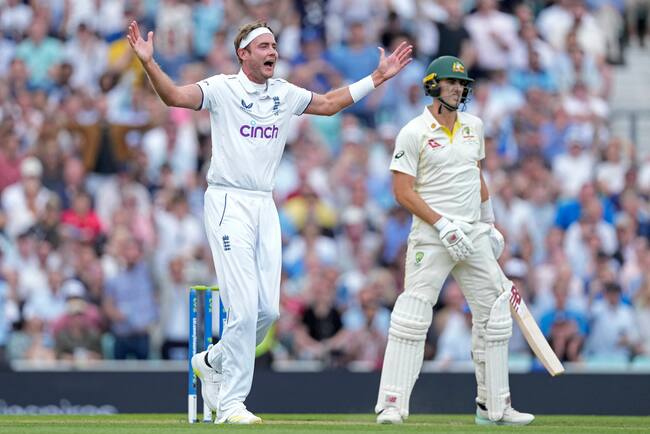

Stuart Broad
Role: Fast Bowler
Bio: Stuart Broad is one of England's premier fast bowlers and a key figure in their bowling attack. Known for his ability to generate bounce and swing, he has been instrumental in many of England's Test victories and is one of the leading wicket-takers in Test cricket history.
Career Stats
| Format | Matches | Innings | Not Outs | Runs | High Score | Average | Strike Rate | 100s | 50s | Wickets | Best Bowling |
|---|---|---|---|---|---|---|---|---|---|---|---|
| Test | 162 | 371 | 39 | 3291 | 169* | 18.38 | - | 1 | 12 | 609 | 8/15 |
| ODI | 121 | 115 | 16 | 2570 | 70 | 30.63 | 86.46 | 0 | 7 | 178 | 4/36 |
| T20I | 56 | 54 | 7 | 317 | 60* | 8.36 | 139.77 | 0 | 2 | 65 | 4/37 |
Memorable Moments

Broad's remarkable spell against Australia in the 2015 Ashes, where he took 8 wickets in a single innings.
Broad being hit for six sixe's